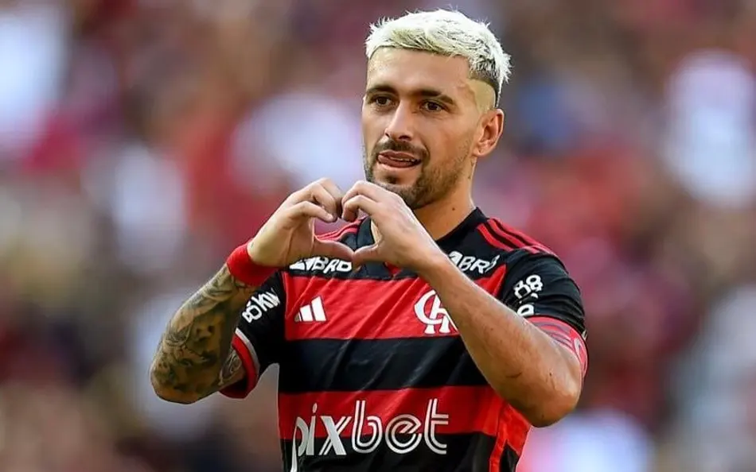

ARRASCA 100°
Arrascaeta completa 100 gols atuando no flamengo

É goleada!
Flamego faz goleada em cima do madureira com placar de 3 x 0

Na expectativa de ter Jorginho contra Lanús
"não era para ser festa"

Luiz Araújo marca o primeiro gol em 2026
cobiçado pelo Atlético-MG por 10 dias

Bap cobra Boto, Filipe Luís e jogadores
do Flamengo antes de decisão
Fla reverte cobranças, testa e continua longe do ideal

Manu Ribeiro comenta clima no Flamengo
"Cobrança fora e dentro do clube"

Flamengo busca oitava final consecutiva
Equipe rubro-negra pode chegar ao 40º título no Estadual

Atacante estreia com dois gols em vitória
do Flamengo no Brasileirão Sub-20
Em busca terceiro título nacional de juniores,
clube rubro-negro bate o Bragantino por 6 a 4 fora de casa